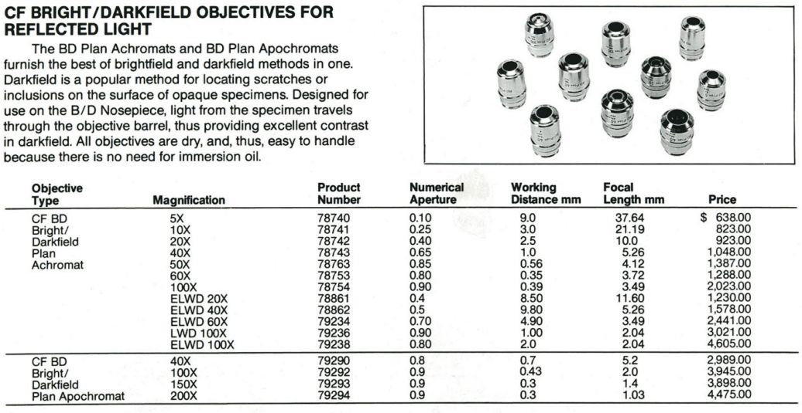

back

Nikon microscopes
Optiphot-66/77/88 | Nikon Multiphot system - prc68.com backgroundWhile my first microscopes were American Optical Series 10s (cheap and plentiful in the U.S.),they were also interesting because AO pioneered diascopic infinity objectives. That did not preclude also acquiring a Nikon Apophot, which used Nikon's popular Model S optics.  That Apophot was too large to move from KY, instead continued using AO/Reichert microscopes until concluding that: 210mm tube lengthNikon 210mm objective motivators:having M26x0.75 threads:  Comparable Mitutoyo objectives have M26x0.706 threads (36TPI, same as RMS). (Roedenstock Schneider enlarger lens shutter) threads... While more highly regarded, Nikon's CFI60 infinity objectives are also significantly more expensive, since still current technology. Obvious frames for 210 BD objectives are Nikon's Optiphots, which are more capable than contemporary Labophots with fixed RMS objective turrets, although all are notorious for fragile plastic fine focus gears. Optiphot frames come in 4 flavors:
| ||
|
maintained by blekenbleu |